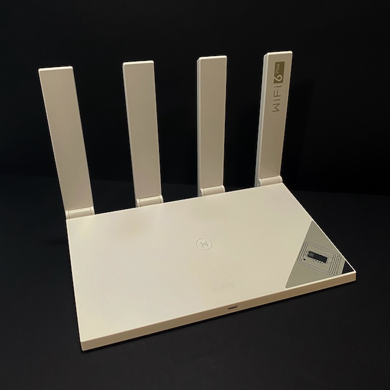
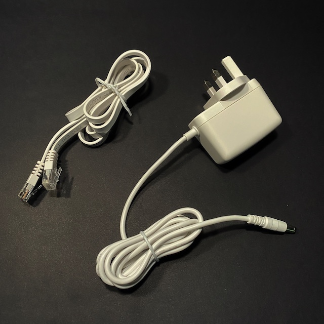
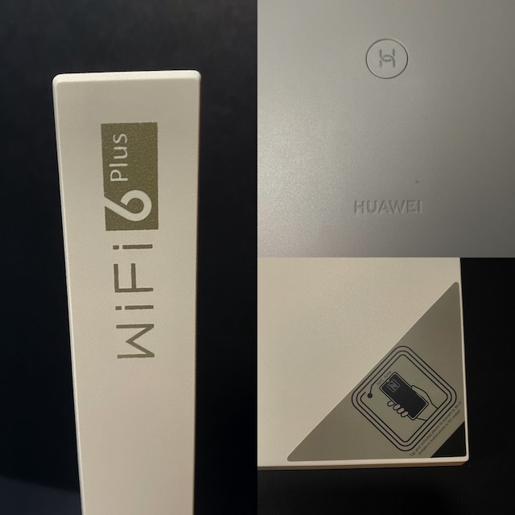
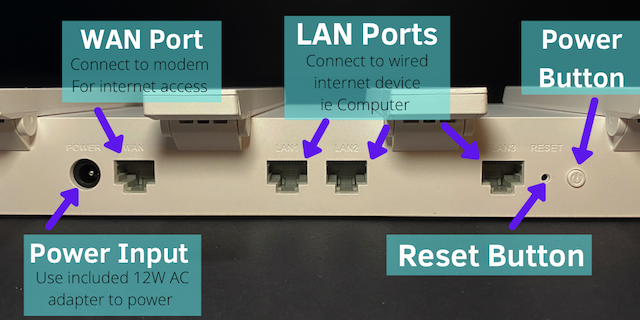
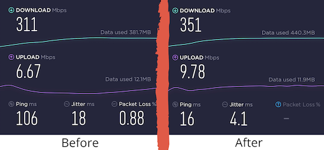

Huawei WiFi AX3 (WiFi 6+) Router Review
31/3/2021
Introduction
When you sign up with an Internet Service Provider (ISP) such as BT or Virgin Media in the UK, they will provide a modem and/or a router. At first, this supplied router is convenient but the ISP hardware has limitations. We check out the Huawei AX3 router with WiFi 6+ capability!
Why did we purchase this?
At first, we had WiFi issues with our ISP and router. We asked our ISP for help and they sent an engineer to our accommodation to check the line. They came back telling us it wasn’t the line problem. We had 6 people studying from home and it would crash so often that I personally resorted to using my own mobile data for web browsing and going to lectures. I knew this was going to be an issue in the long term so I headed to the internet to find a solution.
I found the fairly priced WiFi 6 capable router and thought I would purchase one and share the costs with my housemates. Not knowing how good this router for under £50 was (compared to high rated WiFi routers, at around £100+) we tested this out with the provided ISP modem and router combo!
What’s in the Box?
The router came in a white cardboard box with advertisement of Wi-Fi 6+, a maximum bandwidth of 3000Mbps and a one-click network connection.
Inside the box, the router was tightly packed and wrapped in a premium plastic foil with cut outs for the 4 antenna bands, a power cable at 24W (12V/2A) UK power brick and an included ethernet cable to link it to your existing ISP router and modem combo or standard broadband modem through the WAN port on the back. There was a manual for setting up the device and a warranty for the router if it stops working.
Supported devices
The device is perfect for anyone inside the Huawei and Honor ecosystem as most of their devices are WiFi 6 capable and works great with this router.
The router is Wi-Fi 6 enabled for newer devices that support it.
At the back of the device and in-between the antennas, there is a port for the power connector, WAN port, three LAN ports, reset button a power on button. With the LAN ports, you can wire up your potential smart TV, lights and PC to the back of the router for a direct connection.
Design
The router is primarily white with some decals on it (NFC sticker and large WiFi 6+ logo on the antenna). It comes in a relatively thin wedge shape with 4 non removable “antennas” at the back of the router. It resembles Huawei’s older WS5200 router. Please note most newer WiFi 6 routers are not so thin therefore making this router easier to place on a desk or in a tight space compared to a gaming router of similar specs.
The plastic is high quality with a matte texture and little flex to the body of the router and the antennas securely hinged on the router, however they cannot be folded back meaning they can only be flat placed horizontally to the router of 90 degrees, perpendicular to the base.
The front of the router includes a circular “H” button which allows you to connect together other Huawei WiFi devices and acts as a WPS key to connect to other Huawei routers to create a mesh system. A NFC sensor where you can place your NFC enabled device (limited to Huawei and Honor phones only) to connect directly to the router, this is great if you have purchased a new device or have guests that own Honor/Huawei mobiles.
There is an indicator LED at the front-facing side, green indicates a good WiFi connection, red means the router is not connected to the WiFi and if it flashes with a turquoise colour, its means it is currently working as a wireless access point.
The size of the router is 225mm x 159.2mm x 39.7mm and weighs at only 403g.
Installation and Setup
To get this router setup, plug the router in with the supplied power supply and connect the RJ-45 cable (included ethernet cable) into the WAN from the modem/ISP router.
Head towards your ISP admin page and turn on modem mode. This removes your ISP’s standard router connections and allows your new router to connect your devices instead.
Afterwards, setting up the Huawei AX3 router is relatively simple, even an inexperienced person can set up this router with the Getting Started Wizard.
Currently there is 2 ways to set up the router, the classic way through connecting to the web interface in any browser on your PC or Mac. To do this, you must connect to the Huawei router network to start this process.
The second way is to download the Huawei AI Life mobile app which is available through the iOS and Google Play Store.
- Starting up requires you to accept the terms and license agreement.
- You will be asked to create a Huawei account which can be used to view and change settings at a later date.
- The router will prompt software updates upon first use, which will be performed at night when the router is not in use.
- The next step is to create your new WiFi name (SSID) and password, as the router supports both dual-band 2.4GHz and 5GHz, the router will show both bands in the same signal bar and prioritise 5GHz. You can create 2 separate SSID for both bands as well.
- After a reboot, there will be a summary of your WiFi name and password. The router will be active and you can connect your devices using the SSID and password you created.
- There you go! The whole process to get this router up and running takes 15-20 minutes!
Using web browser
- Upon booting the app, a notification will pop up showing your new unconfigured router. Clicking configure will take you to the next step.
- It will connect and prompt you for auto-updates for the router. We recommend skipping this step as the router can update during a time that is inconvenient.
- Agree to the terms and license agree and press get started.
- The next step is to create your new WiFi name (SSID) and password, as the router supports both dual-band 2.4GHz and 5GHz, the router will show both bands in the same signal bar and prioritise 5GHz. You can create 2 separate SSID for both bands as well.
- After a reboot, there will be a summary of your WiFi name and password. The router will be active and you can connect your devices using the SSID and password you created.
- There you go! The whole process to get this router up and running takes 15-20 minutes!
Using the Huawei AI Life Application
The rest of the settings available is not necessary to configure to allow the router to work.
Issues
One the main issues with this router is the limitation to devices connected to the router at one time. It is advertised maximum 4 devices on 2.4GHz, maximum 16 devices on 5GHz. This can be an issue if you have a large family/accommodation with multiple devices per person. This issue is also a problem if you have multiple smart home products such as Google Home or Amazon Alexa/lightbulbs and other home products.
A router can only share the speeds from your ISP line, if you have poor internet lines, it would not increase speeds dramatically above the standard router. You may need to contact your ISP for a different WiFi plan.
The limited 3 LAN ports can be a problem if you have a lot of devices that require a direct connection to the internet.
Changing your standard ISP router/modem into a modem mode is an extra step and can be a little bit of a hassle if you forgetten your admin password (standard one is written on the box) or do not have access to the admin credentials.
Unfortunately there is no USB port to expand functionality of the router as the design of this router is relatively slim.
As the antennas are not fully adjustable, some users maybe dislike this draw back.
Extra notes
The router can create a Guest network if you have people coming over and wanting to use your WiFi without potential giving out your personal details.
You can limit the speed on certain users through the web portal, this may be helpful to get devices priority bandwidth.
This device allows to parental controls to limited websites during certain times for different devices and blacklist certain websites.
A positive note is that the WiFi can have routines to allow the device to turn off (eg. 12am-6am).
There is a feature called Backup WiFi where it allows some WiFi 5 devices to use the network if they cannot detect WiFi 6. This solves the problem of connecting older devices.
The router has ventilation holes on the underneath/side, which means Huawei’s equipment never got too hot, even on hotter days. The case was always slightly warm at max. With this being said, we used it for 3 months and came across no malfunctions, random reboots during the day or night and other problems associated with overheating.
Conclusion
For our own use case, we found this router to be much better than our ISP provided one. We ended up getting faster speeds from the router and more importantly, less package loss and random shutdowns and disconnects. With its relatively large radius, we managed to fit 3 students on 1 router with multiple devices comfortably (we purchased 2 to fit all the devices each student had).
In conclusion, this is a good router for any medium to large house or has areas that suffer from a WiFi black spot as it can be linked up with multiple AX3 routers to create a mesh system for you home. With 128 non-active connections, its great for devices without the need of a constant WiFi connection or guests that visit your house often. As this router includes WiFi 6+, purchasing this router would be future-proof as it is capable to add multi AX3 to extend functionality. With high WiFi connection speeds and smooth operation of the router makes it simple to set up the hardware and software for anyone with WiFi issues in the house.